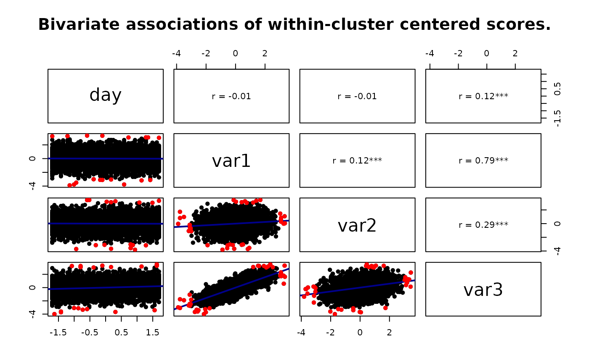
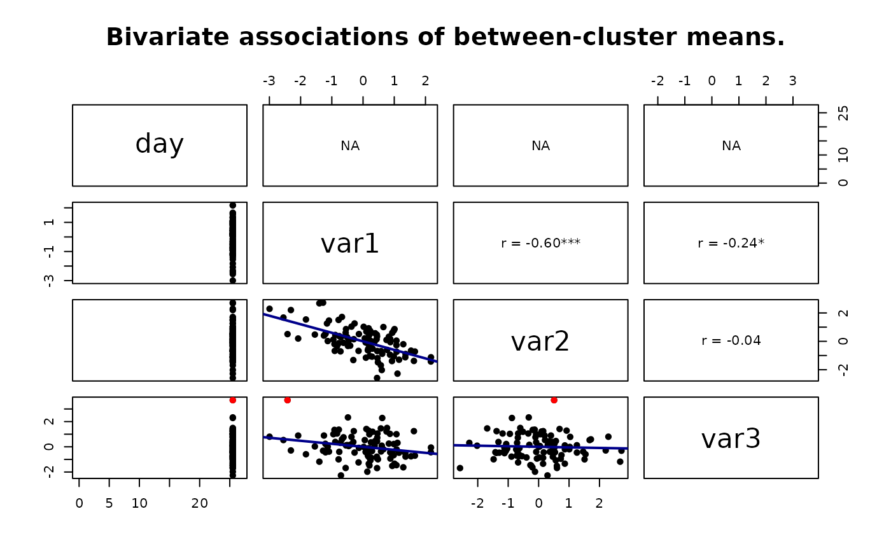

The wbCorr function creates a wbCorr object containing within- and between-cluster correlations, p-values, and confidence intervals for a given dataset and clustering variable. The object can be plotted.
Usage
wbCorr(
data,
cluster,
confidence_level = 0.95,
method = "pearson",
bootstrap = FALSE,
nboot = 1000,
inference = c("analytic", "none", "cluster_bootstrap"),
weighted_between_statistics = NULL,
between_weighting = c("equal_clusters", "cluster_size"),
between_inference = c("analytic", "none"),
centering_rows = c("pairwise_complete", "all_available"),
missing_data = c("pairwise", "listwise")
)
wbcorr(
data,
cluster,
confidence_level = 0.95,
method = "pearson",
bootstrap = FALSE,
nboot = 1000,
inference = c("analytic", "none", "cluster_bootstrap"),
weighted_between_statistics = NULL,
between_weighting = c("equal_clusters", "cluster_size"),
between_inference = c("analytic", "none"),
centering_rows = c("pairwise_complete", "all_available"),
missing_data = c("pairwise", "listwise")
)Arguments
- data
A data frame containing numeric variables, logical variables, or two-level factors for which correlations will be calculated.
- cluster
An atomic vector with exactly one value per data row, or one string naming the cluster column in
data. Missing identifiers are allowed, but at least one identifier must be observed; numeric identifiers cannot beInf,-Inf, orNaN. When a vector is supplied, data columns containing the same identifiers and missing-value pattern are treated as duplicate cluster columns and excluded; pass a column name when the identifier is already indatato avoid ambiguity.- confidence_level
A numeric value between 0 and 1 representing the desired level of confidence for confidence intervals (default: 0.95).
- method
A string indicating the correlation method to be used. Supported methods are
"pearson","spearman", and"auto"(default:"pearson"). Pearson uses t statistics and Fisher-z confidence intervals. Spearman reports a descriptive correlation of mean-centered scores within clusters and a correlation of cluster means between clusters. Analytic Spearman inference is unavailable; useinference = "cluster_bootstrap"for a whole-cluster bootstrap interval. The former"spearman-jackknife"option is rejected because deleting individual rows does not respect clustering.- bootstrap
Deprecated logical alias for
inference = "cluster_bootstrap".- nboot
A whole number of bootstrap samples, at least 10 (default: 1000). The minimum permits quick tests; use substantially more replicates for substantive analyses and assess Monte Carlo stability.
- inference
A string specifying inferential output.
"analytic"uses the documented correlation-test approximation for Pearson p-values and confidence intervals."none"returns coefficients only."cluster_bootstrap"resamples top-level clusters with replacement, recomputes the full decomposition, and reports percentile confidence intervals. Bootstrap p-values are not reported.- weighted_between_statistics
Deprecated logical alias for
between_weighting. If TRUE,between_weighting = "cluster_size"; if FALSE,between_weighting = "equal_clusters".- between_weighting
A string specifying the between-cluster estimand.
"equal_clusters"correlates pair-specific cluster means with each cluster contributing equally."cluster_size"computes a sample-size weighted correlation of pair-specific cluster means, using the number of complete observation pairs in each cluster as weights. Cluster-size weighting is not supported withmethod = "spearman"because no weighted-rank estimand is currently defined.- between_inference
A string specifying whether between-cluster p-values and confidence intervals are calculated analytically (
"analytic") or omitted ("none"). Analytic inference is unavailable forbetween_weighting = "cluster_size"; wbCorr preserves the weighted coefficient but omits its p-value and confidence interval. Useinference = "cluster_bootstrap"for weighted between-cluster inference. Ignored wheninference = "none"orinference = "cluster_bootstrap".- centering_rows
A string specifying which rows are used to estimate cluster means for within- and between-cluster decomposition.
"pairwise_complete"uses only rows where both variables in the current pair are observed."all_available"estimates each variable's cluster mean from all available rows for that variable, then correlates the pair on complete rows.- missing_data
A string specifying whether correlations use all available pairs (
"pairwise", the default) or first retain only rows that are complete across every supported analysis variable and the cluster identifier ("listwise"). Listwise deletion provides a common multivariate sample for users who require a coherent correlation matrix, at the cost of discarding partially observed rows.
Value
A wbCorr object that contains within- and between-cluster statistics. Use the get_table() function on the wbCorr object to retrieve a list of the full correlation tables. Use the summary() or get_matrix() function on the wbCorr object to retrieve various correlation matrices, including ICCs in the merged ones. Use get_ICC() to retrieve all intraclass correlations (ICC(1,1)). Finally, use to_excel() on a table or matrix (or list of matrices) to save them.
Details
Calculates bivariate within- and between-cluster correlations for clustered data, such as repeated measures nested in persons, dyads, teams, or other groups. Only recommended for continuous or binary variables.
Logical variables are encoded as 0/1. Factors must declare exactly two
levels and are encoded as 0/1 in declared factor-level order, so reversing
the levels reverses correlations with other variables. Character variables
must first be converted to factors with an explicit two-level order. Other
factors are not accepted; use meaningful numeric scores for ordered
variables or dummy-code nominal variables. Numeric Inf, -Inf, and NaN
values are treated as missing before centering and estimation.
By default, missing_data = "pairwise", and every variable-pair correlation
is computed on rows where both variables and the cluster variable are
observed. Because different pairs can then use different rows, a completed
pairwise correlation matrix need not be positive semidefinite. wbCorr checks
both unrounded level-specific matrices, warns when a matrix is not positive
semidefinite, and exposes the result through get_matrix_diagnostics().
With missing_data = "listwise", rows missing any supported analysis
variable or the cluster identifier are removed before correlation
decomposition and inference. This gives all pairs a common raw-row sample.
ICCs keep their documented variable-wise finite-row samples and are not
changed by this matrix-oriented option.
With a single coefficient method ("pearson" or "spearman") and common
weights, the resulting complete correlation matrix is positive
semidefinite up to numerical tolerance. method = "auto" can mix Pearson
and Spearman entries, so listwise deletion alone cannot guarantee that its
combined matrix is positive semidefinite; diagnostics are still reported.
Under pairwise handling,
centering_rows = "pairwise_complete" also estimates cluster means from this
same complete-pair row set. This keeps the within residuals centered for the
actual pairwise sample and makes the between correlation a correlation of
matched pair-specific cluster means.
Detailed tables always retain one row for every requested unordered pair.
n_obs is the number of jointly observed raw rows with a nonmissing cluster
identifier, and n_clusters is the number of clusters contributing at least
one such row. Under centering_rows = "all_available", additional unpaired
rows can contribute to the variable-specific means, but n_obs remains the
joint pair-row count. status describes coefficient estimability ("ok" or
"not_estimable") and reason gives a stable failure code.
inference_status separately records "not_requested", "ok",
"partial", or "unavailable", with details in inference_reason.
A descriptive coefficient requires two analysis units with positive
variance; inferential output can require more.
With centering_rows = "all_available", each variable's cluster mean is
estimated from all available rows for that variable before the pairwise
correlation is computed. This can make the cluster means more stable when
data are missing. It also mirrors a common multilevel-model preprocessing
workflow, where person means are often created before the model applies
complete-case filtering. That workflow is defensible in multilevel models.
In wbCorr, however, the variables are treated symmetrically as a descriptive
bivariate decomposition, so all-available centering means the two cluster
means in a pair may be based on different occasions. For that reason,
"pairwise_complete" is the default.
The within-cluster correlation is the pooled residual correlation. For a
given pair, each observed value is centered around its cluster mean for that
same complete-pair row set, and the correlation is computed on the resulting
residuals. For Pearson within-cluster correlations, analytic inference uses
N_pair - k_pair - 1 degrees of freedom, where N_pair is the number of
complete observation pairs and k_pair is the number of clusters
contributing at least one complete pair. This analytic test is a working
approximation because residual pairs can still be dependent within clusters.
For resampling intervals that preserve the top-level dependence, use
inference = "cluster_bootstrap".
The between-cluster correlation is computed from pair-specific cluster means.
With between_weighting = "equal_clusters", every cluster contributes one
equally weighted mean. With between_weighting = "cluster_size", cluster
means are weighted by the number of complete observation pairs in that
cluster. The ordinary Pearson t test and Fisher-z interval are not valid for
a weighted correlation. Therefore analytic p-values and confidence intervals
are omitted for cluster-size-weighted between correlations. Use
inference = "cluster_bootstrap" when inference is required.
Pearson analytic confidence intervals use Fisher's z transformation. If
df denotes the corresponding t-test degrees of freedom, the Fisher-z
standard error is 1 / sqrt(df - 1). The interval is unavailable when
df <= 1.
With method = "spearman", the within coefficient is Spearman's correlation
of the pairwise mean-centered scores and the between coefficient is
Spearman's correlation of the pairwise cluster means. These are descriptive
mean-based decompositions, not the conditional-ridit and median-centroid
clustered rank parameters of Tu, Li, and Shepherd (2025), and need not be
invariant to monotone transformations of the original observations. wbCorr
therefore does not attach analytic p-values or confidence intervals to these
coefficients. Whole-cluster bootstrap confidence intervals are available.
For each variable, wbCorr also reports the one-way random-effects,
single-measure ICC(1,1). It is estimated from all finite observations for
that variable using the ANOVA method of moments and an effective cluster size
when clusters are unbalanced. Negative sample ICCs are retained; they occur
when the between-cluster mean square is smaller than the within-cluster mean
square and, for severely unbalanced samples, the raw ANOVA estimate can be
less than -1. Its population interpretation assumes the one-way random-effects
model: independent clusters, a common within-cluster variance, and
noninformative cluster size and missingness. The ICC is NA when the data do
not contain enough clusters or within-cluster replication, or when total
variability is zero.
With inference = "cluster_bootstrap", wbCorr resamples whole top-level
clusters, recomputes the selected within- and between-cluster correlations,
and reports first-order percentile bootstrap confidence intervals. This
keeps the package's descriptive estimands while avoiding row-level
independence assumptions. Interval accuracy assumes independent clusters
and adequate numbers of clusters and bootstrap replicates; the technical
minimum of 10 valid replicates is not a recommendation for substantive
analyses. n_boot_attempted and n_boot_valid report Monte Carlo yield.
Bootstrap is skipped when fewer than three clusters contribute. An interval
is unavailable with fewer than 10 finite replicate coefficients, and is
marked "partial" when invalid replicates had to be excluded. No bootstrap
p-value is reported because wbCorr does not currently implement a validated
null-resampling test for these clustered estimands.
Correlation-matrix diagonals are 1 only when the variable has at least two
usable values and positive variance at that level; otherwise they are NA.
P-value diagonals are always NA. Merged summary matrices continue to show
the variable's ICC on the diagonal instead of a level-specific self-
correlation.
A matrix with any unavailable coefficient cannot be assessed as a complete
positive-semidefinite correlation matrix and is reported as
"not_assessable" rather than silently treated as valid.
Inspired by the psych::statsBy function, wbCorr allows you to calculate, extract, and plot within- and between-cluster correlations for further analysis.
References
Tu, S., Li, C., & Shepherd, B. E. (2025). Between- and within-cluster Spearman rank correlations. Statistics in Medicine. doi:10.1002/sim.10326
Hall, P., & Wilson, S. R. (1991). Two guidelines for bootstrap hypothesis testing. Biometrics, 47(2), 757-762. doi:10.2307/2532163
Martin, M. A. (2007). Bootstrap hypothesis testing for some common statistical problems: A critical evaluation of size and power properties. Computational Statistics & Data Analysis, 51(12), 6321-6342. doi:10.1016/j.csda.2007.01.020
Andrews, D. W. K., & Buchinsky, M. (2000). A three-step method for choosing the number of bootstrap repetitions. Econometrica, 68(1), 23-51. doi:10.1111/1468-0262.00092
R Core Team. Correlation, variance and covariance matrices. R statistical software documentation. https://stat.ethz.ch/R-manual/R-devel/library/stats/html/cor.html
Examples
# importing our simulated example dataset with pre-specified within- and between- correlations
data("simdat_intensive_longitudinal")
# create a wbCorr object:
correlations <- wbCorr(simdat_intensive_longitudinal,
'participantID')
#> Warning: Analytic p-values and confidence intervals are working approximations for clustered data; use inference = 'cluster_bootstrap' for whole-cluster resampling intervals.
# optionally compute sample-size weighted between-cluster correlations:
weighted_correlations <- wbCorr(simdat_intensive_longitudinal,
'participantID',
between_weighting = 'cluster_size')
#> Warning: Analytic p-values and confidence intervals are working approximations for clustered data; use inference = 'cluster_bootstrap' for whole-cluster resampling intervals.
#> Warning: Analytic inference is not supported for cluster-size-weighted between correlations; returning the weighted coefficient without a p-value or confidence interval. Use inference = 'cluster_bootstrap' for weighted inference.
# quick cluster-bootstrap example; use more bootstrap samples in applied work:
# \donttest{
bootstrapped_correlations <- wbCorr(simdat_intensive_longitudinal,
'participantID',
inference = 'cluster_bootstrap',
nboot = 20)
# }
# optionally estimate cluster means from all rows available for each variable:
all_available_correlations <- wbCorr(simdat_intensive_longitudinal,
'participantID',
centering_rows = 'all_available')
#> Warning: Analytic p-values and confidence intervals are working approximations for clustered data; use inference = 'cluster_bootstrap' for whole-cluster resampling intervals.
# returns a list with full detailed tables of the correlations:
tables <- get_table(correlations) # the get_tables() function is equivalent
print(tables)
#> $within
#> Parameter1 Parameter2 pearson's r t-statistic df 95% CI p
#> 1 day var1 -0.01 -0.64 4899 [-0.04, 0.02] 0.522
#> 2 day var2 -0.01 -0.80 4899 [-0.04, 0.02] 0.424
#> 3 day var3 0.12 8.67 4899 [0.10, 0.15] < .001***
#> 4 var1 var2 0.12 8.53 4899 [0.09, 0.15] < .001***
#> 5 var1 var3 0.79 89.04 4899 [0.78, 0.80] < .001***
#> 6 var2 var3 0.29 21.50 4899 [0.27, 0.32] < .001***
#> n_obs n_clusters n_boot_attempted n_boot_valid status reason inference_status
#> 1 5000 100 NA NA ok <NA> ok
#> 2 5000 100 NA NA ok <NA> ok
#> 3 5000 100 NA NA ok <NA> ok
#> 4 5000 100 NA NA ok <NA> ok
#> 5 5000 100 NA NA ok <NA> ok
#> 6 5000 100 NA NA ok <NA> ok
#> inference_reason
#> 1 <NA>
#> 2 <NA>
#> 3 <NA>
#> 4 <NA>
#> 5 <NA>
#> 6 <NA>
#>
#> $between
#> Parameter1 Parameter2 pearson's r t-statistic df 95% CI p
#> 1 day var1 NA NA NA <NA> <NA>
#> 2 day var2 NA NA NA <NA> <NA>
#> 3 day var3 NA NA NA <NA> <NA>
#> 4 var1 var2 -0.60 -7.46 98 [-0.71, -0.46] < .001***
#> 5 var1 var3 -0.24 -2.43 98 [-0.42, -0.04] 0.017*
#> 6 var2 var3 -0.04 -0.44 98 [-0.24, 0.15] 0.659
#> n_obs n_clusters n_boot_attempted n_boot_valid status
#> 1 5000 100 NA NA not_estimable
#> 2 5000 100 NA NA not_estimable
#> 3 5000 100 NA NA not_estimable
#> 4 5000 100 NA NA ok
#> 5 5000 100 NA NA ok
#> 6 5000 100 NA NA ok
#> reason inference_status inference_reason
#> 1 zero_variance_parameter1 unavailable coefficient_not_estimable
#> 2 zero_variance_parameter1 unavailable coefficient_not_estimable
#> 3 zero_variance_parameter1 unavailable coefficient_not_estimable
#> 4 <NA> ok <NA>
#> 5 <NA> ok <NA>
#> 6 <NA> ok <NA>
#>
# returns a correlation matrix with stars for p-values:
matrices <- summary(correlations) # the get_matrix() and get_matrices() functions are equivalent
print(matrices)
#> $within
#> day var1 var2 var3
#> day 1.00 -0.01 -0.01 0.12***
#> var1 -0.01 1.00 0.12*** 0.79***
#> var2 -0.01 0.12*** 1.00 0.29***
#> var3 0.12*** 0.79*** 0.29*** 1.00
#>
#> $between
#> day var1 var2 var3
#> day NA NA NA NA
#> var1 NA 1.00 -0.60*** -0.24*
#> var2 NA -0.60*** 1.00 -0.04
#> var3 NA -0.24* -0.04 1.00
#>
#> $merged_wb
#> day var1 var2 var3
#> day [-0.02] -0.01 -0.01 0.12***
#> var1 NA [0.51] 0.12*** 0.79***
#> var2 NA -0.60*** [0.49] 0.29***
#> var3 NA -0.24* -0.04 [0.49]
#>
#> $note_wb
#> [1] "Top-right triangle: Within-correlations. Bottom-left triangle: Between-correlations. Diagonal: ICC"
#>
#> $merged_bw
#> day var1 var2 var3
#> day [-0.02] NA NA NA
#> var1 -0.01 [0.51] -0.60*** -0.24*
#> var2 -0.01 0.12*** [0.49] -0.04
#> var3 0.12*** 0.79*** 0.29*** [0.49]
#>
#> $note_bw
#> [1] "Top-right triangle: Between-correlations. Bottom-left triangle: Within-correlations. Diagonal: ICC"
#>
#> $note
#> [1] "***p < 0.001, **p < 0.01, *p < 0.05"
#>
# Plot the centered variables against each other
plot(correlations, 'within')
#> This may take a while...

plot(correlations, which = 'b')
#> This may take a while...

# Store the list of correlation matrices to excel
to_excel(matrices, path = tempfile(fileext = ".xlsx"))